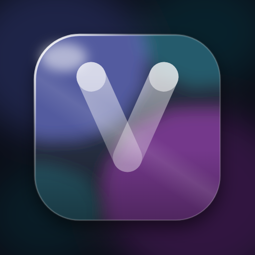
VS Glass 1.2.1A see-through VS Code with a real refracting lens at every rim — and, on macOS 26, a window made of the system's own Liquid Glass, bending whatever is live behind it.
Extensions → … → Install from VSIX… pick a Glass theme · answer Apply · quit and reopen once
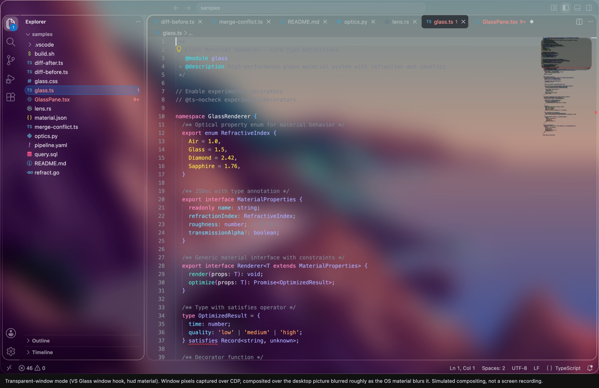
Not a video. The same filter the extension ships, running in your browser.
Drag it over the code, the photo, or a screenshot of VS Code itself. The bend, the colour split at the rim and the rim light are the extension's own filter, lifted out of glass.css.
No blur trick, no screenshot fakery.
Each surface class gets its own displacement map, baked at build time from a curved-edge profile and fed to
an SVG feDisplacementMap inside backdrop-filter. Red, green and blue are displaced
by different amounts, so the rim disperses like real glass.
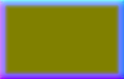
A real map fromglass.css. R/G carry the bend vector, B the rim mask.
A backdrop-filter can never see past its own page. On macOS 26 a helper process keeps a real
Liquid Glass plane under the window, tuned so the body is a pixel-exact pass-through and only the rim
refracts — so other windows, video and the desktop bend under the edge, live.
| Body, measured against no glass | 0.00 difference |
|---|---|
| Rim bend | exactly the configured width |
| Colour split | exactly the configured offset |
VS Code has no extension point for a transparent window or workbench CSS, so VS Glass adds one
marker-delimited hook to out/main.js — the only bootstrap file VS Code does not checksum.
VS Glass: Remove restores it byte-exact.
// VS-GLASS-HOOK-V5 start
win = new BrowserWindow({ …, transparent: true })
win.webContents.insertCSS(glassCss)
// VS-GLASS-HOOK-V5 end
The extension composes the CSS from your settings and the hook re-applies it on the spot. After the first quit-and-reopen, nothing needs a reload.
Dark, light, clear, and an opaque one for projectors.
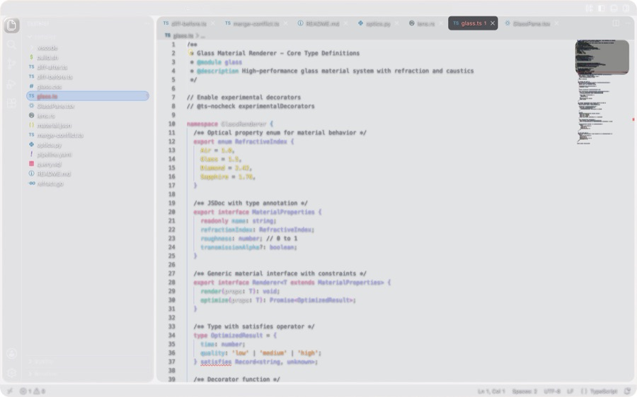
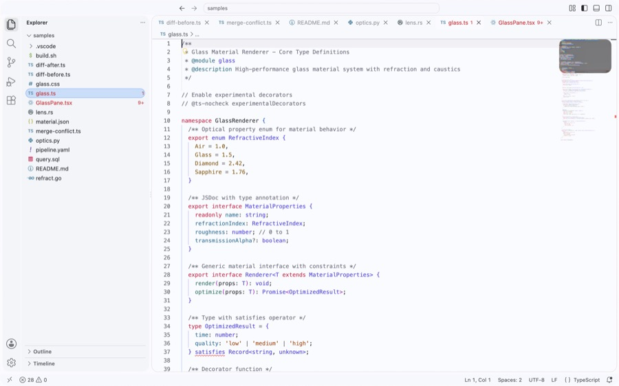
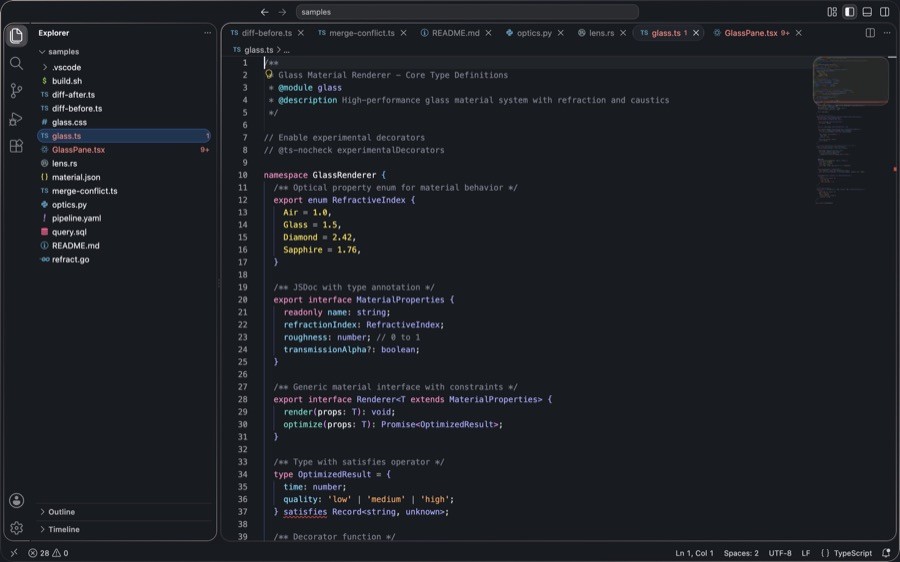
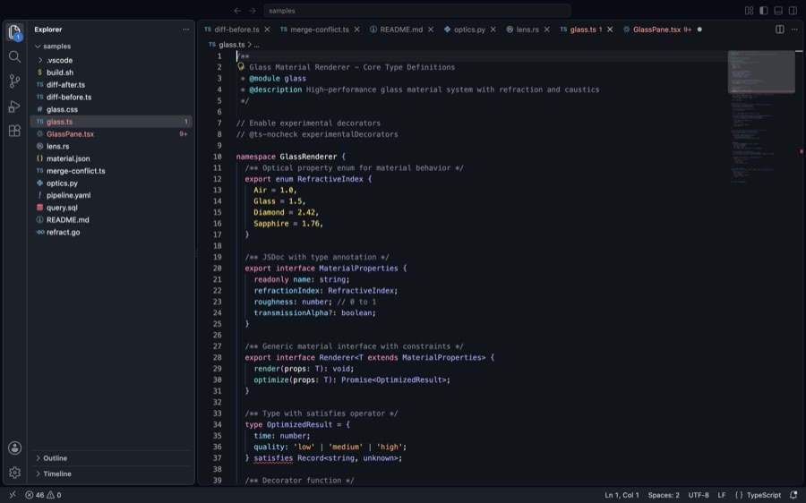
A thin coloured film, off by default.
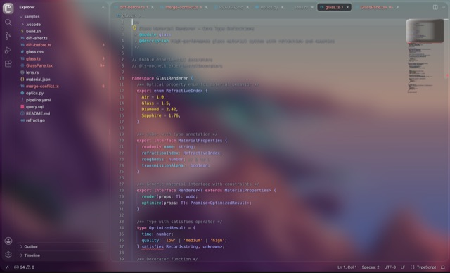
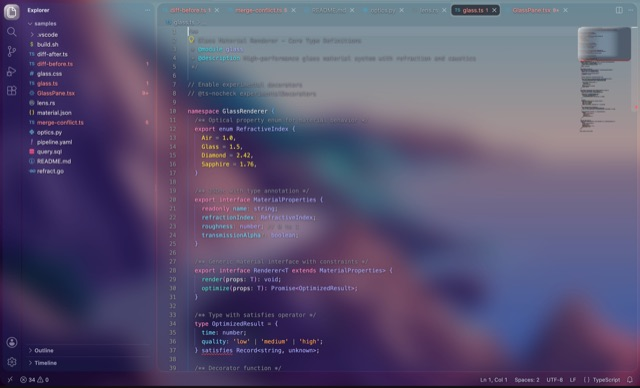
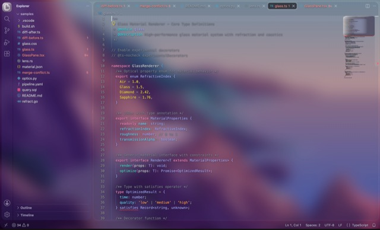
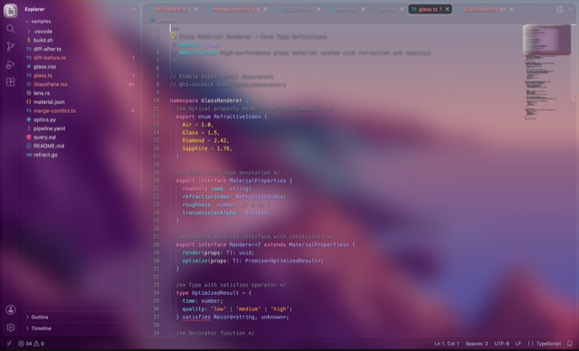
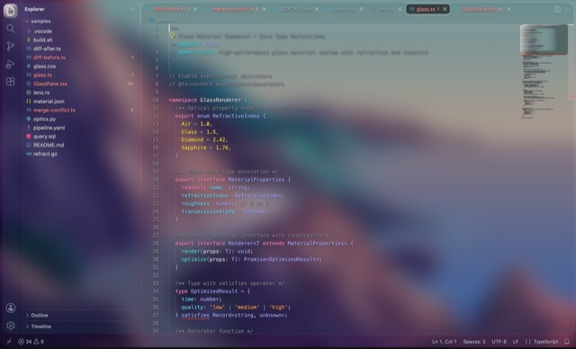
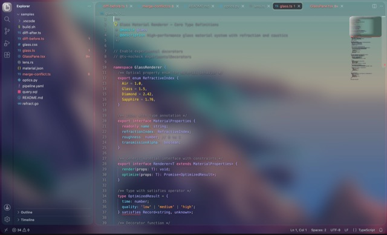
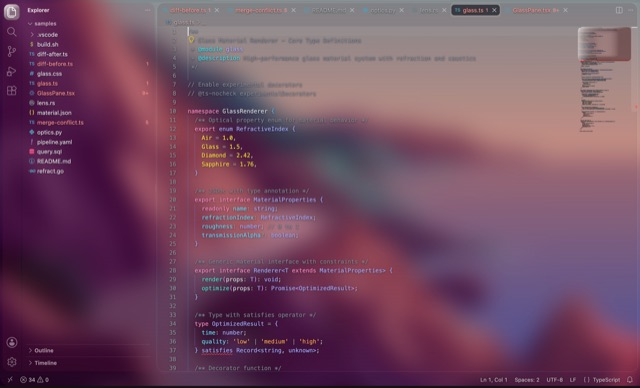
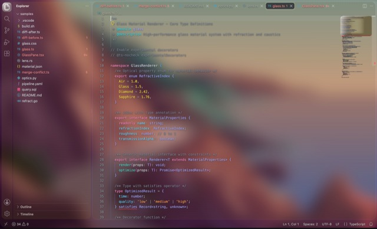
Not on the Marketplace — download the package.
Download the .vsix, then in VS Code:
Extensions → the … menu → Install from VSIX…. Or from a terminal:
"/Applications/Visual Studio Code.app/Contents/Resources/app/bin/code" \ --install-extension vs-glass-1.2.1.vsix the full path matters: a `code` alias that wraps `open` swallows --install-extension
Then pick Glass Regular Dark, Regular Light, Clear or Opaque, answer Apply to the one-time prompt, and quit with ⌘Q and reopen once. macOS gets the see-through window; everywhere else the same optics run over a wallpaper backdrop.